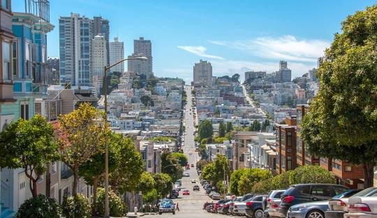

Overview of San Francisco
San Francisco is on the northern part of California, and it provides a unqiue experience. Ofcourse there are the Golden State Bridge, Alcatraz, and the old vintage houses. But it also provides a rich and stunning view of the ocean at bay. Wiht it's hills it provides and sumptuous look, and plesant region of Northern California.